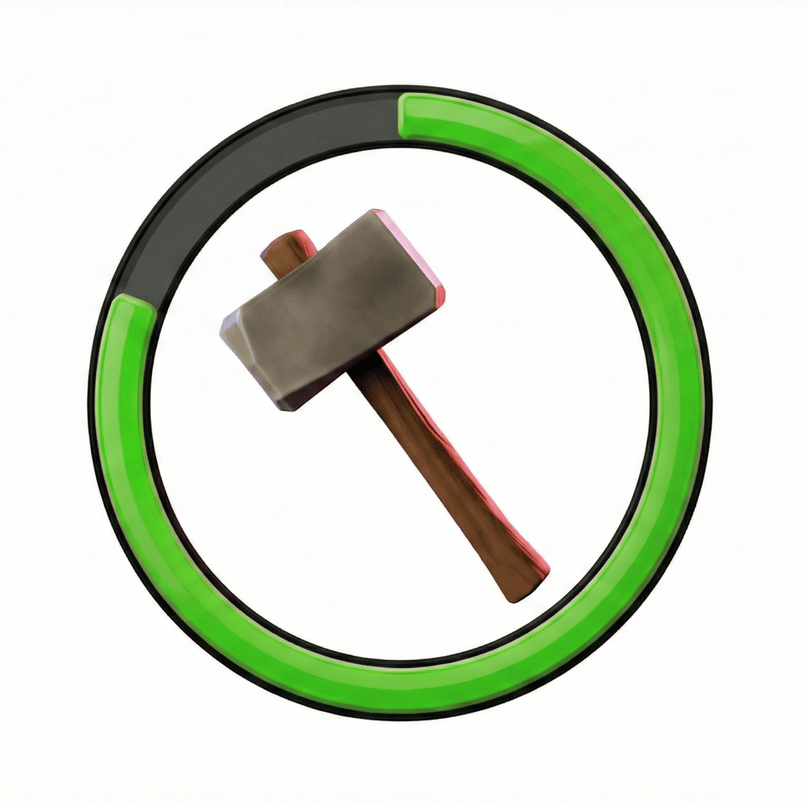

Smart Upgrade Tracking
Export your upgrade progress with a single tap and track troops, heroes, and buildings effortlessly.

Track Clash of Clans upgrades with beautiful iOS Home Screen widgets.
iOS-only • Widgets for Home Screen
Stay ahead in Clash of Clans with Clashboard, the tracking and management app designed for players who want full control over upgrades and progression.
Export your upgrade progress with a single tap and track troops, heroes, and buildings effortlessly.
Monitor builders, lab upgrades, pets, builder base progress, and helper cooldowns at a glance with multiple widget sizes.
Manage all your accounts in one place with seamless profile switching for multi-account players.
Receive personalized alerts per profile so you never miss a builder or Gold Pass boost.
Connect directly to the Clash of Clans API for enhanced, accurate profile information and automatic updates.
View upgrade costs, calculate totals to max level, and filter equipment by your custom preferences.
Track Gold Pass boosts and get reminders to activate your boost before it expires.
Rearrange your home tab for quick access to what matters most to you.
Report bugs, request features, and help shape Clashboard via the in-app feedback form (Settings → Feedback) or the public feedback form below.